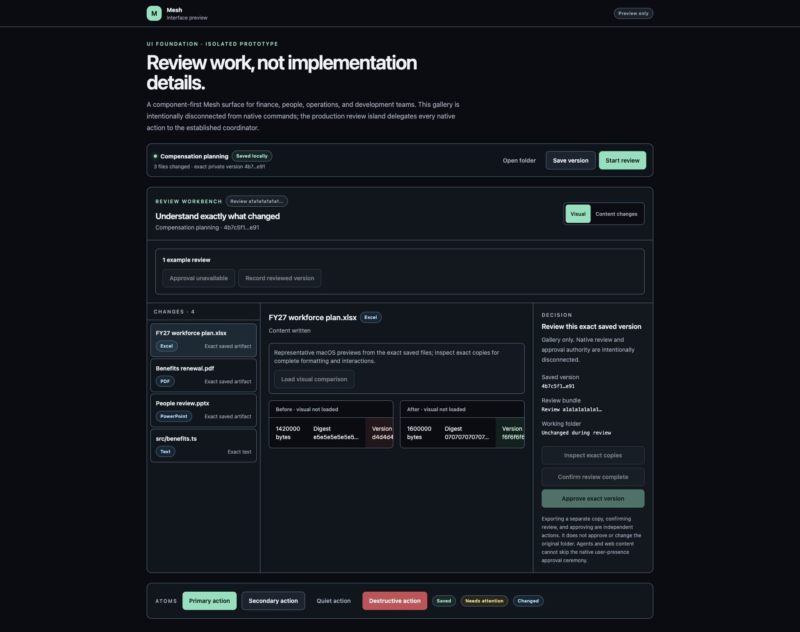
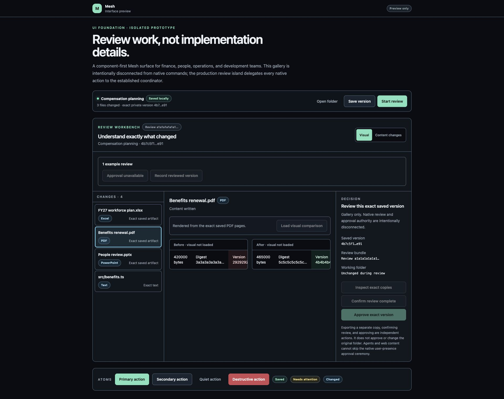
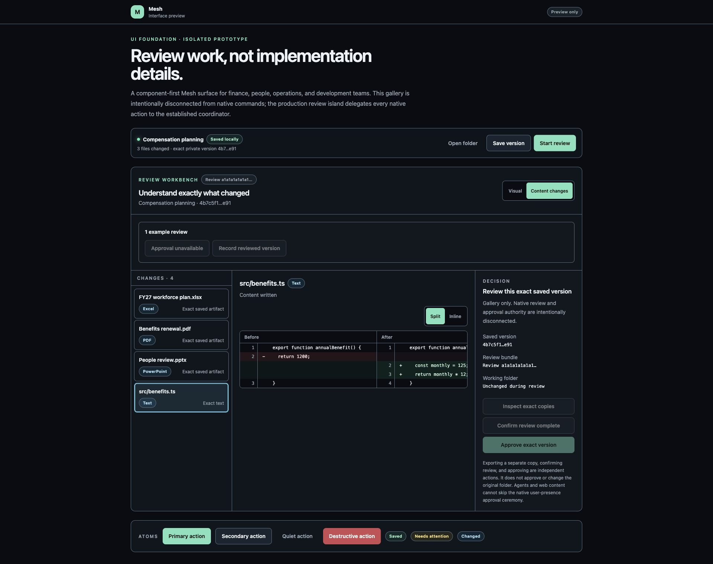

Workspaces → Choose a folder
Select a small disposable project. Read the Import preview and confirm that the original folder will remain unchanged.
Visual first session
This page is the quick visual companion to START-HERE.txt and FIRST-SESSION.txt. Read START-HERE first for checksum and macOS safety instructions.
The whole journey
20-minute mission
Select a small disposable project. Read the Import preview and confirm that the original folder will remain unchanged.
Mesh opens a separate working folder. Make sure its path is not your original project path.
Ask for one recognizable change. Never give the same writable agent folder to two agents.
First stop Codex, terminals, and editors using that folder. Confirm Finish. Mesh scans the complete result and privately saves safe changes.
Review displays an exact recorded version, not every live filesystem change. If your new file is missing, use Current → Refresh, then return to Review and record the version.
Approval is unavailable in the ad-hoc build. Select a new empty destination, preview the whole saved tree, and confirm only the plan you expect.
What Review looks like
These screenshots use fictional data rendered by the exact React review components. They are interface previews, not a claim that the pictured example was processed by the native app.



When a file seems missing
| What you see | What it usually means | Next action |
|---|---|---|
| The file is in an agent folder but not Review. | The handoff or recorded review is still older than the file. | Stop every process using the agent folder, choose Finish agent handoff, open Review, then choose Record reviewed version. |
| The file appears under Changes. | Mesh found native work that is not yet in the private saved version. | Read the queue. Choose Save all privately only for the exact safe changes you expect; resolve moves, deletions, links, and unsupported entries explicitly. |
| Review still shows an earlier file. | Review intentionally shows a recorded exact version. | Use Current → Refresh, then return to Review and choose Record reviewed version. Do not expect a live filesystem browser. |
| Approval unavailable. | The ad-hoc build has no Apple-validated application identity. | Use Choose export folder and a new empty folder. Do not select the original project. |
Send the Build value, the page and action, elapsed minutes, safe diagnostics, and one sentence: “I expected ___, but Mesh ___.” Remove confidential names and paths from screenshots.
Stop if the original changes without an explicit approved update, a file disappears, the wrong saved version opens, an agent folder silently moves, or Mesh claims success after an error.